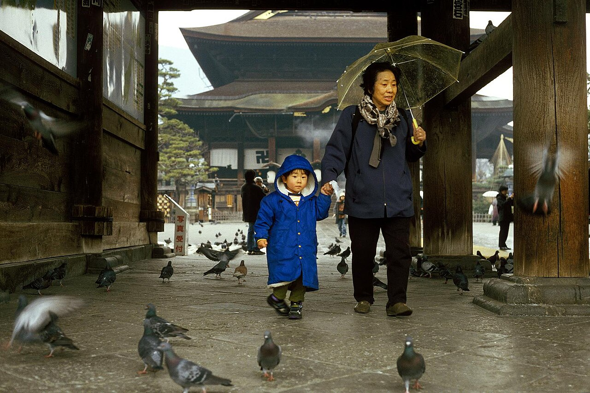
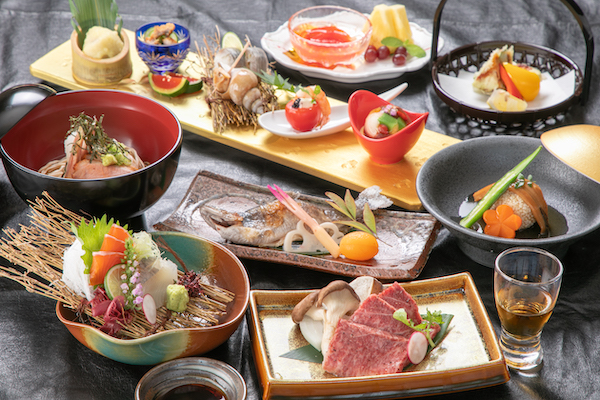
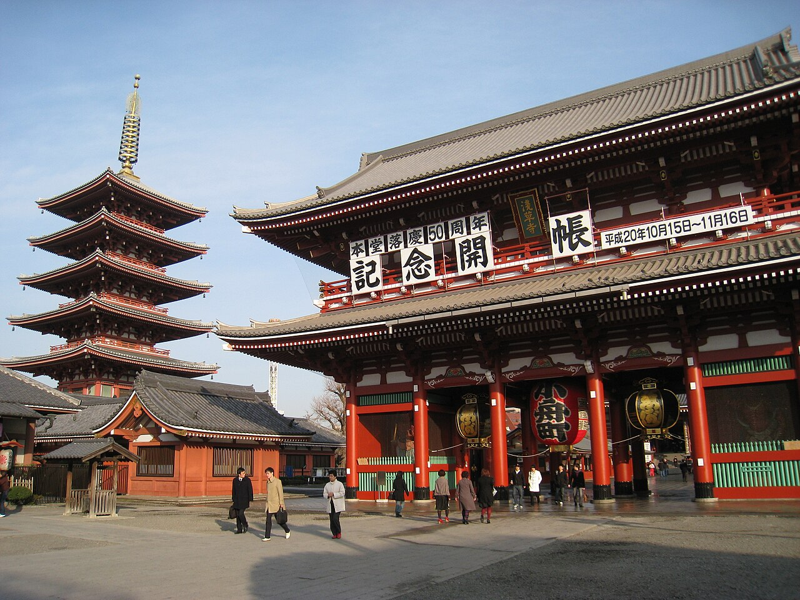
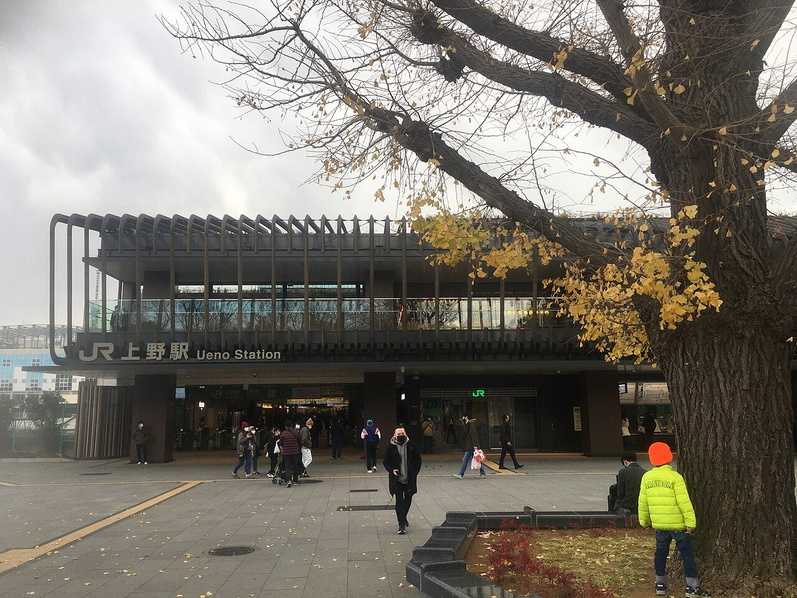

交通＋地圖
步行時間以酒店／車站官方或常見導覽為準（2026-09-26 核實）。地圖可離線打開連結；嵌入圖需網絡。長電 2026–27 冬季時刻約 2026 年 11 月公布 —— 出發前請再對 PDF。
逐日交通計劃（Plan C · 無車）
- 一 12/14 · HX604 → 長野
HX604 香港 T2 08:10 → 成田 T1 13:20 → 入境取行李 → 京成 Skyliner → 京成上野（約 41 分）→ 步行轉 JR 上野新幹線（5–10 分；行李多 15–20）→ 北陸新幹線 → 長野（約 1h15–1h40）→ shortlist 酒店（東口 Livemax 2–3 分／善光寺口 Dormy 1–3 分）。
票：Skyliner + 新幹線指定席（建議出發前買妥）。目標約 16:30–18:00 到長野。
- 二 12/15 · 長野 → 發哺（早班）
酒店退房 → 長野東口 #23（Livemax 約 2–4 分；Dormy 約 8–12 分；建議 10:15 前到）→ 長電冬季特急約 10:40（以 11 月 PDF 為準）→ 發哺溫泉 S21（約 70–80 分）→ 徒歩約 2 分／致電 Higashidate 搬行李 → 下午可滑。
票：長電巴士車內或售票處；一人約 ¥3,000（以官網為準）。
- 三 12/16 · 全日滑雪
以 Higashidate／發哺為基地。無需長途交通。若去湯田中釀酒廠需另查巴士／taxi（非步行距離）。
- 四 12/17 · COMPLEX U brunch → 上野
退房後由發哺／山之驛落山往湯田中（巴士約 30–50 分，或以山之驛轉長電）→ 徒歩約 10 分至 YUDANAKA BREWERY COMPLEX U（brunch／午餐，約 11:00–14:00 一帶）→ 長電湯田中 → 長野 → 新幹線 → 上野 → 不忍口徒歩約 7–8 分至 & Here Tokyo Ueno。
陷阱：COMPLEX U 不定休 —— 出發前對官網日曆；私人 SPA 要預先訂。晚餐 ちんや（淺草；預約）→ 之後酒吧 COCKTAIL WORKS 或 The TRAD（問朋友）。仍留新幹線緩衝。
- 五 12/18 · 午餐選項 → HX611
A) Matsui（四谷）或 B) 上野／淺草午餐 → 京成上野／日暮里 → Skyliner（約 41–45 分）→ 成田 T1 → HX611 20:25 → 香港 T1 00:50+1。
時間：建議 16:30–17:00 離上野；約 18:25 前到機場（港航建議起飛前 2 小時）。門到門約 70–90 分。選 A 要 12/15 中午 TableCheck。不要同日志賀→成田。
長野站出口速記：新幹線／多數特急相關動線靠近站體中央；東口＝長電 #23、Livemax；善光寺口＝Dormy、みそ家／居酒屋／酒吧區。兩口以構內自由通路相連（約 3–5 分）。
關鍵步行／轉乘地圖
a）成田 → 京成上野（Skyliner）／轉 JR 上野
成田機場京成改札乘 Skyliner 約 41 分到京成上野。出站後跟「JR／新幹線」標示步行約 5–10 分到 JR 上野（行李多預留 15–20 分到新幹線月台）。京成上野與 JR 上野是相鄰但分開的車站。
在 Google 地圖開啟（公共交通路線）
票：Skyliner 券（機場或線上）· 亦可現場買。
b）JR 上野 → 長野（北陸新幹線）
入 JR 上野中央改札後轉新幹線轉乘改札，下行至 B4F 新幹線月台（19–22 番線一帶）。往長野乘 あさま／はくたか 等北陸新幹線，約 1h15–1h40。長野到站後出新幹線口，跟標示去東口（巴士）或善光寺口（Dormy／多數餐廳）。
在 Google 地圖開啟（公共交通路線）
票：指定席可線上（えきねっと）或綠窗口／自動售票機。
c）長野站 → Hotel Livemax Premium Nagano Ekimae
出東口（東口），酒店在東口站前側，官網／じゃらん：徒歩約 2–3 分（約 150–200m）。地址：長野市大字栗田 2145。新幹線抵達後跟「東口」標示最直接。
在 Google 地圖開啟（步行路線）
d）長野站 → Dormy Inn Nagano Zenkounoyu
出善光寺口巴士旋轉處，官網：徒歩約 3 分（部分資料寫 1 分——以 2–3 分為準）。地址：長野市北石堂町 1373-1。善光寺口側餐廳／酒吧較多。
在 Google 地圖開啟（步行路線）
e-1）Livemax → 長野東口 #23 巴士站（長電冬季特急）
酒店本身在東口側，步行回東口巴士區約 2–4 分。長電志賀高原急行（冬季）在東口 #23 乘車。已定早班約 10:40（出發前以 PDF 為準）；朋友想早上山。
在 Google 地圖開啟（步行路線）
長電時刻：nagadenbus.co.jp／express／winter／shigakogen／
e-2）Dormy Inn → 長野東口 #23 巴士站
由善光寺口側酒店，經車站東西自由通路走到東口（構內約 3–5 分）再找 #23，合計約 8–12 分（拖行李請多留）。不要出站繞馬路——跟「東口／バス」標示穿過車站最穩。
在 Google 地圖開啟（步行路線）
f）發哺溫泉 S21 ↔ Hotel Higashidate
巴士停發哺溫泉（S21）後，酒店徒歩約 2 分（官網／JTB）。地址：山ノ内町平穏 7149。冬季注意：車不能開到玄關——到巴士站後致電酒店 0269-34-2534，職員會協助搬行李／泊車移動。最遲入住約 17:00。
在 Google 地圖開啟（步行路線）
非固定「接駁巴士班次」——是抵達後致電請酒店協助搬運。
g）Higashidate／山之驛 → 長野（回程巴士）
周四下山：可在發哺 S21直接搭回長野東口，或滑到中央區於志賀高原山之驛（S18）乘同一系統回程（較方便若你在一ノ瀬／丸池一帶結束）。車程約 70–80 分到長野東口。到站後轉新幹線往上野。
在 Google 地圖開啟（公共交通路線）
回程時刻請對 2025–26 PDF，2026–27 約 11 月再截圖確認。
h）JR 上野（新幹線到達）→ & Here Tokyo Ueno
新幹線到上野後，出站往不忍口（しのばず口），沿官網路線徒歩約 7–8 分（約 550–650m）。地址：台東區上野 2-11-18。亦可出京成上野再步行（見下卡）。
在 Google 地圖開啟（步行路線）
i）& Here → 京成上野／Skyliner → 成田（周五）
酒店到京成上野徒歩約 3–5 分（約 240–400m）。乘 Skyliner 約 41–45 分到成田 T1。HX611 20:25 → 建議約 16:30–17:00 離酒店、約 18:25 前到機場（門到門約 70–90 分）；勿同一天從志賀直接趕成田。詳見 航班。
在 Google 地圖開啟（步行路線）
票：回程 Skyliner 建議預先買；到機場後跟航班航廈標示。
食 · 食べログ精選
分數於 2026 年 9 月在食べログ核實。只列你們真的會去的店。滑雪區 2026 冬季時間請出發前再確認。
長野站 · 周一晚／周二巴士前

善光寺一帶（車站善光寺口步行可達；餐廳／酒吧多在此側）· Wikimedia —— 非個別餐廳店面照
らぁめん みそ家 · Ramen Misoya
長野駅前 · 信州味噌拉麵／沾麵
3.62Tabelog
周一深夜 OK
約 ¥1,000
常排隊
- 好評：濃郁信州味噌湯；石臼粗麵／沾麵；約 11:00–24:00。
- 注意：只有吧台，常要等 —— 兩人帶行李下新幹線後仍可接受。
為何周一：善光寺口步行 2–3 分 · 吃得飽 · 開到深夜。食べログ →
信州長屋酒場 · Shinshu Nagaya Sakaba
長野駅前 · 居酒屋／當地小菜
3.47Tabelog
兩人居酒屋
馬刺 · おやき
當地清酒
- 好評：一站式信州 —— 馬刺、おやき、野澤菜、蕎麥配菜、清酒選擇不錯。
- 注意：晚上人均約 ¥5–6k（食べログ平均）；約 16:45 開門。
為何周一：旅途後想坐下來喝啤酒／清酒多過再來一碗麵。食べログ →
蕎麦旬菜 こすげ · Soba Shunsai Kosuge
車站約 5 分 · 手打蕎麥（EAST 百名店 2025）
3.73Tabelog
強蕎麥 · 百名店
周一・日休
今次略過
- 好評：香氣足的粗磨蕎麥；當地清酒；EAST 百名店 2025。
- 注意：周一休；午市短且需電話預約。本行程二 15 早班上山 —— 唔夾こすげ／すき亭午餐。
今次略過：朋友想早上山；百名店午餐要改搭約 14:30 才夾。食べログ → · 官網 →
ナカジマ会館 · Nakajima Kaikan
MIDORI 長野 2F · 站食蕎麥
3.49Tabelog
周二早餐
快
- 好評：簡單天婦羅玉子蕎麥；旅行早餐能量剛好。
- 注意：站食；現金／交通 IC —— 當日再確認付款方式。
為何周二早上：車站綜合體內，東口 #23 前。食べログ →
いろは堂 MIDORI長野 · Irohado
車站 · おやき 外帶
3.34Tabelog
小食／手信
野澤菜おやき
- 好評：經典長野おやき（尤其野澤菜）—— 不是正餐，但是地道一口。
為何：上巴士前或抵達後順手買。食べログ →
志賀／發哺／山ノ内／湯田中 · 周二–周四
發哺現實：酒店以外幾乎沒有獨立晚餐店。預設＝Hotel Higashidate 晚餐。山上食べログ分數普遍不高 —— 用來參考午餐／繞道，不是「必訂」。
試算表備註 — 山の実（Yamanomi 蕎麥）Tabelog 4.05：好店，但食べログ寫明
約 11 月底–4 月底休（積雪無法進出）。位置在北志賀 Holiday Hotel／Dragondola —— 不是發哺。
今次 12 月行程略過。
食べログ →
Hotel Higashidate 餐飲
發哺溫泉 · 酒店晚餐／早餐
n/ahotel

酒店餐飲（官網）—— 發哺滑雪夜最可靠方案
夜間 Plan A
確認餐方案
- 滑雪後山上晚餐 —— 不必黑夜找 taxi。
- 確認房價是否包晚餐；最遲入住約 17:00。
為何周二／三：最近、最暖、最穩。酒店料理 →
山ノ内大勝軒 · Yamanouchi Daishoken
冬季：一ノ瀬ファミリー休息所內 · 拉麵
3.36Tabelog
滑雪午餐
周二休
不在發哺門口
- 好評：經典大勝軒風味；冬季在一ノ瀬ファミリー免費休息所內。
- 注意：需滑／連往一ノ瀬；周二休（所以周三才是日子）。
為何周三午餐：若路線往那邊，山上真正當地拉麵。食べログ →
YUDANAKA BREWERY COMPLEX U
湯田中 · 手工啤酒 + 信州小食
3.25Tabelog
四 12/17 已定
兩人啤酒
下山順路
- 好評：自釀啤酒；輕鬆食物；可選 2 樓日歸溫泉／私人湯房。
- 注意：湯田中站徒歩約 10 分。營業約 10:00–18:00（飲食 L.O. 約 17:00；季節或改）。不定休——出發前對官網日曆。私人 SPA 需預先網上預約。
為何 12/17：退房落山順路 brunch／午餐，之後轉長野新幹線上東京。食べログ → · 官網 →
関英ドライブイン · Sekiei Drive-in
湯田中 · 實在食堂
3.58Tabelog
區內分數較高
休息日古怪
- 好評：扎實 drive-in 定食 —— 凍天後很飽。
- 注意：食べログ營業日看起來很稀（周一／二／六／日休）；去之前務必確認。
為何：只在已到湯田中且當天有開時。食べログ →
備選：山上午餐 レストラン イタクラ（溫泉 Hotel Itakura —— 志賀設施頁有味噌拉麵／醬汁豬扒飯；冬季約 11:00–14:30，請確認）。周四巴士若停山之驛，食堂約 3.26。
東京 · 周四晚（ちんや）／周五午餐選項

淺草寺（寶蔵門・五重塔）—— 周四晚餐散步氣氛；非個別餐廳店面照 · Wikimedia
すき焼き ちんや 浅草本店 · Chin'ya
淺草 · 壽喜燒老字號（明治創業／百名店級）
3.64Tabelog
四 12/17 計劃
壽喜燒
等朋友確認後訂
- 地址：東京都台東区花川戸 2-16-1 · 東武／地鐵淺草徒歩約 6 分（上野電車約 10–15 分）。
- 營業：平日午餐約 11:00–15:00 · 晚餐約 16:30–21:30（料理 L.O. 約 20:00）；土日祝約 11:00–21:30。
- 特色：淺草最古老壽喜燒系之一；「適サシ」黑毛和牛；有英語菜單。晚市兩人約 ¥10,000–15,000／人（視套餐）。
- 訂位：網上預約（Tabelog／店舖預約頁）· 電話 050-5484-7052。建議訂約 18:00–19:00 入座，之後返上野選 Cocktail Works 或 The TRAD。Billy 先問朋友再訂。
為何 12/17 晚：新幹線後由上野易達；正式壽喜燒合兩人；之後步行／電車返上野喝 cocktail。食べログ → · 預約頁 → · 官網 →
RAMEN MATSUI
新宿御苑前／四谷 · 預約制拉麵（Michelin Bib／食べログ百名店）
3.81Tabelog
五 12/18 選項 A
完全預約
現金 only
- 地址：東京都新宿区四谷 4-25-10 ダイアパレス御苑前 B-2 · 新宿御苑前駅徒歩約 6 分。
- 營業：月・火・金・土・日・祝 約 11:00–15:30；水・木定休；每月不定休 —— 對 @ramen_matsui。
- 訂位：TableCheck · 到店前 3 天 12:00開放（12/18 → 12/15 12:00）· 預訂費 ¥500／人（不退）· 遲到／24h 內取消 ¥2,000／人 · 座位約 30 分 · 提前 10 分到。
- 注意：一人一碗拉麵；無素食／無麩質；香水禁止；12 歲以下不可；大行李先 Instagram DM。
為何列作 12/18 選項：周五有開、只做午餐，起飛前合拍；朋友若想試別的，改選上野／淺草即可（唔使訂）。食べログ → · Michelin →
浅草名代らーめん 与ろゐ屋 · Yoroiya
淺草 · 柚子醬油拉麵 + 餃子
3.65Tabelog
五 12/18 選項 B
約 ¥1,000
常排隊
- 好評：清爽東京醬油配柚子；手造餃子；每日約 11:00–21:00。
- 注意：遊客多 —— 避開高峰或接受短等。
為何 12/18 選項 B：近上野、唔使訂；朋友唔想繞四谷時用。食べログ →
俺の生きる道 上野店 · Ore no Ikiru Michi
上野廣小路 · 濃厚拉麵
3.62Tabelog
近酒店
開到深夜
- 好評：重口味、很飽 —— 跟清淡相反。
- 注意：偏 junk-delicious；高峰會排。
為何周四晚：新幹線後由 & Here Ueno 步行可達。食べログ →
喜多方食堂 浅草本店 · Kitakata Shokudo
淺草 · 喜多方拉麵
3.66Tabelog
實在
周三休
湯可能售罄
- 好評：東京內正宗喜多方風味。
- 注意：偏早／午；周五午餐前再確認時間。
為何 12/18 選項 B（若有開）：起飛前一碗很飽；近淺草。食べログ →
まぐろ人 · Magurobito
雷門 · 站壽司
3.41Tabelog
輕鬆兩人
鮪魚為主
- 好評：站台壽司的鮪魚水準不錯；快、不矯情。
- 注意：站食；可能忙 —— 故意不是 omakase。
為何周四：阿美橫／淺草散步 + 壽司，不必 ¥15k 房間。食べログ →
牛丼専門サンボ · Sambo
上野／末廣町附近 · 經典牛丼
3.49Tabelog
傳奇平價
周四休
- 好評：老派上野牛丼 —— 快速補充燃料。
- 注意：周四休 —— 今次行程只剩周五午餐。
為何周五：比拉麵更快、搭 Skyliner 前。食べログ →
RAMEN MATSUI（四谷）3.81：五 12/18 午餐選項 A（未定死）。完全預約制 · TableCheck 於到店前 3 天 12:00 開放（即
12/15 12:00）· 現金 only。朋友想試別的 → 選上野／淺草卡（与ろゐ屋、喜多方等）。
TableCheck →
酒吧 · Cocktail bars
適合約 38 歲兩位男士：正式 cocktail／威士忌吧，不是夜店。分數 2026-09-26（HKT）自食べログ核實。滑雪區未找到可信 cocktail bar —— 發哺晚上以酒店為主。
長野 · 周一晚（車站附近）
長野站一帶 —— 下列酒吧均在善光寺口步行範圍內；無個別店面可用授權圖，故用車站區氣氛照
MOSCO · モスコ
長野駅 善光寺口 徒歩約 1 分 · 鮮果 cocktail bar
3.03Tabelog
周一營業
鮮果雞尾酒
約 ¥2–3k
- 為何適合：車站地下、新鮮水果 cocktail 為賣點；旅途後兩人喝一杯很輕鬆，不必正裝。
- 時間：月–六約 19:00–翌 3:00（Hot Pepper／店訊）；周日再確認。
- 地址：長野市南千歳 1-19-9 theBOSTON ビル B1F
食べログ →
エランドール · Elan d’Or
長野駅 善光寺口 徒歩約 5 分 · 啤酒 + cocktail
3.07Tabelog
周一營業
世界啤酒
有食物
- 為何適合：約 100 種世界啤酒 + 專業 bartender cocktail；有食物，兩人可當第二站慢慢喝。
- 時間：月–六約 18:00–03:00（Suntory BAR-NAVI／食べログ）；不定休。
- 地址：長野市北石堂町 1391-5 錦会館 2F
食べログ → · BAR-NAVI →
略過 BAR EDEN：離站也近、cocktail 種類多，但每周一定休 —— 剛好撞上你們長野夜。Cloud Nine 偏 Irish pub／「Flavor Blaster」表演向，不是經典 cocktail 優先。
東京 上野／湯島／淺草 · 周四晚

上野站公園口一帶 —— 下列酒吧步行可達 & Here Ueno；無個別店授權圖，用上野氣氛照
BAR COCKTAIL WORKS 上野
京成上野／JR 上野 徒歩約 3 分 · 創作 cocktail + 輕食
3.33Tabelog
四 12/17 選項 A
最靠近酒店
世界賽級調酒
全席禁煙
- 選項 A · cocktail：上野少有的正式 mixology／鮮果 cocktail；店主有世界大賽經歷；兩人聊天喝。排在 ちんや 之後；& Here／京成上野徒歩約 3–8 分。全席禁煙 —— 唔可以喺度抽雪茄。
- 時間：每日約 17:30–02:30；年末年始再確認。Charge 約 ¥660／人。預算夜約 ¥5–6k。
- 同 The TRAD 二揀一（問朋友）；見 訂位清單。
選項 A · 等朋友揀。 食べログ → · 官網 →
The TRAD 湯島・上野バー
上野廣小路／湯島 徒歩數分 · whisky + cocktail + 雪茄
3.10Tabelog
四 12/17 選項 B
可坐低抽雪茄
旅客評價較穩
席料約 ¥1,200
- 選項 B · cigar bar：全店可吸（吸烟目的店）；古巴等雪茄＋威士忌／鮮果 cocktail。Google 約 4.5（約 99 則）；英文旅客多讚雪茄價錢合理、酒選擇強。例：Montecristo No.4 約 ¥3,520（菜單會變）。
- 時間：日–四約 18:00–23:30；金六至 24:00。席料約 ¥1,200／人。雪茄或需現金。電話 03-5812-4800 · 可預約。
- 同 COCKTAIL WORKS 二揀一（問朋友）；壽喜燒後返上野一帶即可。
選項 B · 等朋友揀。 食べログ → · 官網 →
BAR bishudor · ビシュドール
上野／御徒町 徒歩約 3 分 · 地下隱密 cocktail bar
3.03Tabelog
隱密地下室
鮮果／威士忌
約 10 席
- 為何適合：小而安靜的地下吧；旬果 cocktail + 嚴選威士忌／craft gin —— 適合晚餐後第二站，不是鬧區蹦迪。
- 時間：月–金約 18:00–02:00；土 17:00–；日較早收（BAR-NAVI／食べログ）。不定休。
食べログ → · BAR-NAVI →
備選（淺草）：ReBAR（雷門 River Terrace，2025 年開，隅田川夜景；周二休 —— 周四 OK）· KAMINARI CAFE&BAR（雷門，銀座出身 bartender，火–六；周／一休）。兩者較新，食べログ分數仍在累積；優先仍建議上野三間。